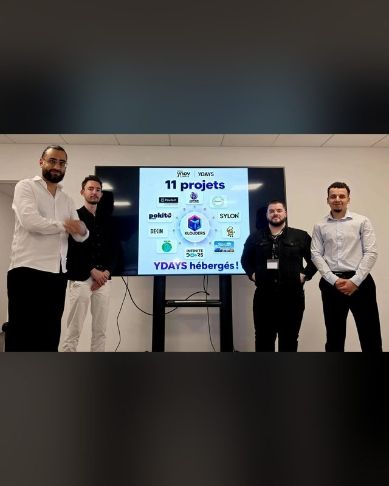

systèmes
- Linux
- Debian
- Ubuntu
- Windows
- Bash
- PowerShell
Ouvert aux opportunités
Je conçois, j'automatise et je sécurise des infrastructures : virtualisation Proxmox, Infrastructure as Code, pipelines CI/CD durcis. Je souhaite mettre ces compétences au service d'une équipe.


1/4Portrait professionnel
01profil
Étudiant en Mastère Expert Cloud, Sécurité & Infrastructure à Ynov Sophia Antipolis, j'ai construit mon profil sur une conviction simple : une infrastructure fiable est une infrastructure documentée, automatisée et sécurisée dès sa conception.
Concrètement, je déploie des VM à partir d'une simple demande GLPI, je décris des environnements complets en code avec Terraform, OpenTofu et Ansible, et je mets en place des pipelines CI/CD qui bloquent les secrets exposés et les images vulnérables avant la mise en production.
En parallèle, j'accompagne les étudiants en informatique d'Ynov en tant que mentor IT. Expliquer clairement un sujet technique, rédiger des procédures et transmettre mes connaissances fait partie de ma façon de travailler.
# VM as a Service: clone a Proxmox VM
resource "proxmox_virtual_environment_vm" "vm" {
name = var.vm_name
node_name = var.proxmox_node
clone {
vm_id = var.template_id
}
cpu { cores = var.vm_cpu }
memory { dedicated = var.vm_ram }
network_device { bridge = var.vm_bridge }
agent { enabled = true } # reports the IP
}
output "vm_ipv4" {
value = proxmox_virtual_environment_vm.vm.ipv4_addresses
}# DevSecOps pipeline (excerpt)
jobs:
gitleaks-ci: # exposed secret = blocked
codeql: # critical flaw = blocked
test:
scan-image:
needs: [test]
uses: ./.github/actions/trivy-scan # SBOM + CVE
publish:
needs: [scan-image, gitleaks-ci, codeql]
deploy-backend:
needs: [publish]
environment: production02compétences
Classés par domaine, tels que je les utilise dans mes projets et dans mon home lab.
03projets
Des projets concrets, documentés et versionnés sur GitHub.
12 derniers mois
Chaque case représente un jour de travail versionné sur GitHub.
04parcours
De Gabès à Sophia Antipolis, en passant par l'Allemagne : treize ans d'informatique, de langues et de terrain.
05contact
Je suis à la recherche d'un poste d'ingénieur Cloud, Infrastructure ou DevOps. Le plus simple pour me joindre : un e‑mail ou un message sur LinkedIn.